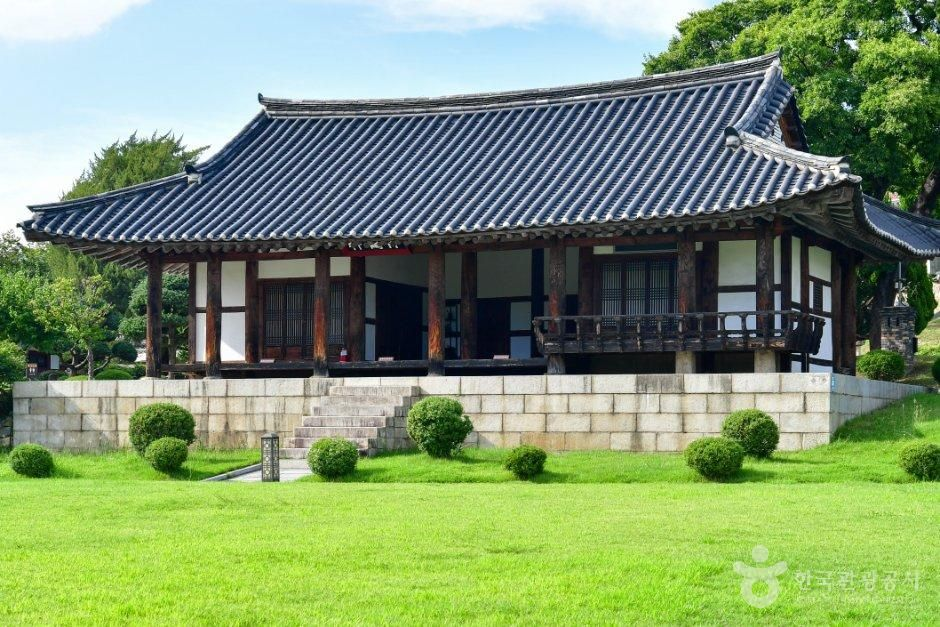
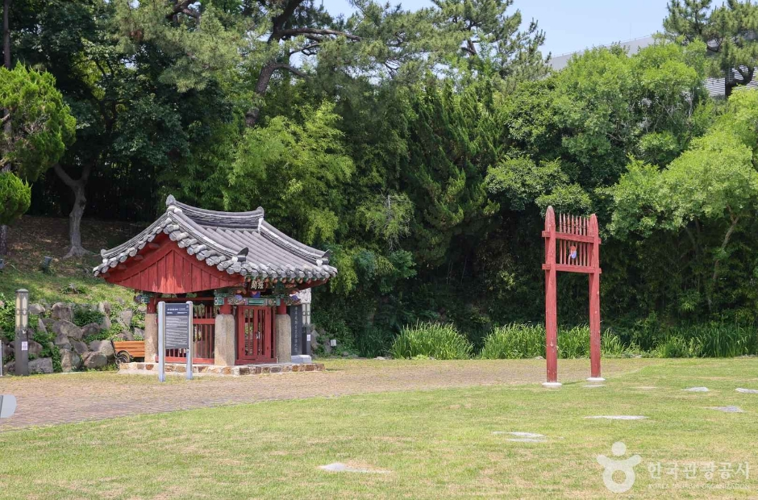
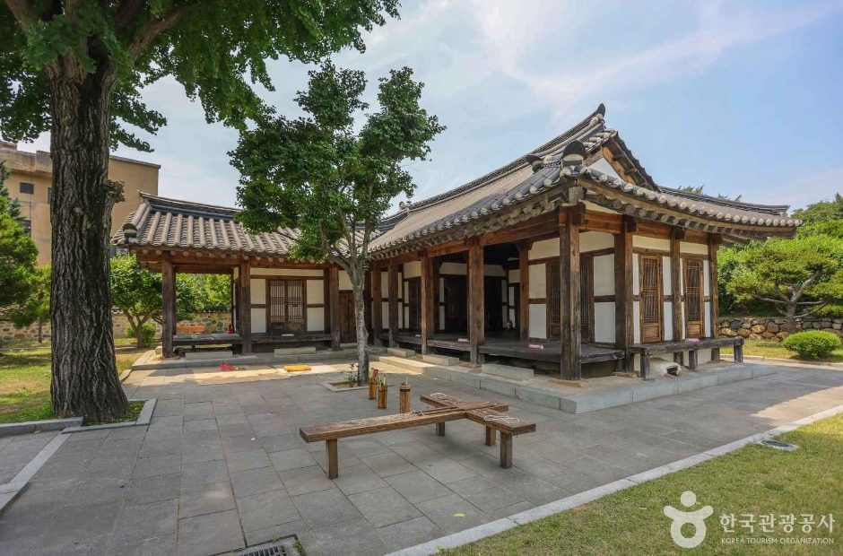

Stop 1: Stepping Inside 1681 Joseon History at Ulsan Dongheon & Naea (울산 동헌 및 내아)
Just 2 hours and 10 minutes south of Seoul Station by KTX lies Ulsan—famous globally as an industrial powerhouse, yet home to a remarkably tranquil historic heart in Jung-gu (167 Dongheon-gil, Jung-gu, Ulsan). While crowds pack Gyeongju’s main street thirty minutes away, you can walk beneath centuries-old zelkova and hackberry trees at Ulsan Dongheon and Naea almost entirely to yourself—and admission is completely free.


What Makes Ulsan Dongheon Architecturally Special
Designated as Ulsan Tangible Cultural Heritage No. 1, Dongheon (동헌) served as the central government office where Joseon Dynasty magistrates conducted public administration in Ulsan Dohobu:
- Built in 1681, Rebuilt as "Banhakheon" in 1763: First constructed in the 7th year of King Sukjong (1681) by Magistrate Kim Su-o under the name Ilcheongheon, the hall was expanded and rebuilt in the 39th year of King Yeongjo (1763) by Magistrate Jo Ik-myeong and renamed Banhakheon (반학헌).
- Classic 6-Kan by 2-Kan Paljak Roof Structure: Notice the graceful upward curve of the Paljak (hip-and-gable) tiled roof supported by cylindrical wooden columns resting on carved granite foundation stones.
- The Connected Naea (내아) Living Quarters: Directly adjacent to the public office sits the Naea—the private family residence of the magistrate—where visitors can enjoy traditional cultural programs and quiet wooden-veranda views over the courtyard lawn.


Stop 2: Connecting to Busan’s Namparang-gil & Haeundae Coastal Trail
From Ulsan KTX Station (or Taehwagang Station via the Donghae Line commuter train), you can reach Busan in just 20 to 45 minutes. Our favorite way to spend the afternoon is walking the wooden oceanfront boardwalks connecting Haeundae Blueline Park (Cheongsapo to Songjeong) and the dramatic cliffside paths of Igidae Coastal Walk.
Insider Transit Tip: Book your KTX tickets at least 2 weeks ahead on Trip.com’s Korea Train Portal (especially for Friday afternoon through Sunday evening departures), and grab your Haeundae Sky Capsule + Korea 5G eSIM bundle on Klook before leaving home.
Essential Korea Packing Checklist: 5 Items to Order on Amazon Before You Fly
Navigating Korean subway transfers, KTX overhead luggage racks, and 220V Type C/F outlets is dramatically smoother when you pack the right gear. Below is our tested Amazon packing checklist for a 7-to-14-day Korea trip:

1. 20" Polycarbonate Hardside Carry-On Spinner
Fits KTX & AREX overhead racks without needing oversized luggage reservations · 360° silent wheels + built-in TSA lock

2. Nike Initiator Cushioned Walking Sneaker
Tested for 20,000+ daily steps on Seoul subway stairs, palace courtyards, and Busan coastal boardwalks
| Packing Item | Why You Need It Specifically in Korea | What to Look For | Shop / Book |
|---|---|---|---|
| Korea Type C / Type F 220V Plug Adapter (4.8mm Pins) | Korea uses recessed 220V/60Hz Schuko-style outlets (Type F). Loose 4.0mm euro plugs often spark or fall out of hotel walls. | Snug 4.8mm round pins + built-in USB-C PD 65W GaN ports | 🛒 Buy on Amazon |
| 10,000mAh Airline-Safe USB-C Power Bank | Using Naver Map, Papago translation, and camera all day drains phone batteries by 3 PM. Must be kept in carry-on (never checked). | Under 100Wh capacity with clear Wh label printed on casing for Korean airline security checks | 🛒 Buy on Amazon |
| 20" Hardside Carry-On + Compression Packing Cubes | Large 28" suitcases are tough to haul up older Seoul subway stairs and scarce KTX luggage racks. | 100% polycarbonate shell + dual spinner wheels + TSA combination lock | 🛒 Buy on Amazon |
| Korea Unlimited 5G eSIM + T-Money Card | Instant data upon landing at Incheon (ICN) Terminal 1 or 2 for KakaoT taxis and Naver Map navigation. | Instant QR activation or Incheon airport counter pickup | 🎫 Book on Klook |
| KTX High-Speed Rail & Station Hotels | Connect Seoul, Ulsan, Gyeongju, and Busan in under 2.5 hours. | English seat selection + foreign credit card checkout | 🏨 Book on Trip.com |
Quick Visitor Info: Ulsan Dongheon & Naea
- Address: 167 Dongheon-gil, Jung-gu, Ulsan, South Korea (울산광역시 중구 동헌길 167)
- Operating Hours: 09:00 AM – 06:00 PM Daily (Outdoor courtyard open until early evening; free admission)
- How to Get There: From Ulsan KTX Station, take Express Bus 5001 or a 25-minute KakaoT taxi directly to Jung-gu Cultural Street (중구 문화의거리), located right beside Ulsan Dongheon.